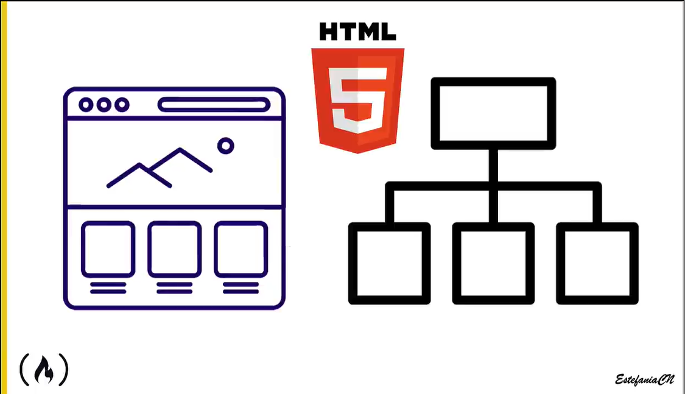

Maniuplacion del DOM
forma de ver el DOM para aprender a manipularlo

DOM: Document Object Model
"modelo de objetos del documento"
El Document Object Model es la representacion de los objetos (elementos) que conforman la estructura de un
documento en la web.

Este es un ejemplo de como deberia verse jerarquias desde la perspectiva del DOM.
incluso en este ejemplo de DOM podemos ver que se aprecia hasta el texto dentro de las etiquetas. puesto que
la diea del DOM es incluso tener en cuenta estos mismos datos y asi mismo su posicion en la jerarquia de
elementos.
Entender esto es importante porque representar el documento html a traves del DOM nos permite acceder a sus
elementos y maniuplarlos.
Cada elemento dentro del DOM se concidera un Nodo, puesto que cada elemento contiene informacion que conecta con otro/s nodos. (esto tambien incluye al elemento texto dentro de las etiquetas)